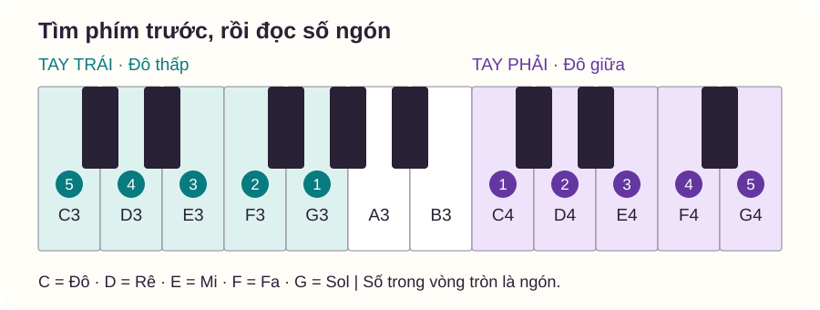
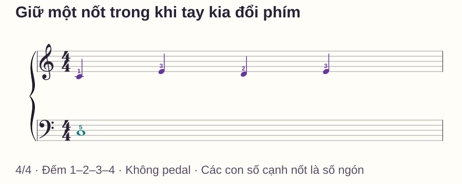
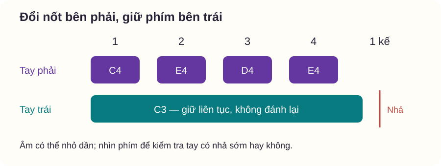

Phối hợp hai tay
Một tay giữ nốt, một tay di chuyển: bài tập piano dễ hiểu
# Một tay giữ nốt, một tay di chuyển: bài tập piano dễ hiểu
Bạn giữ một nốt trầm bằng tay trái, nhưng mỗi lần tay phải đổi phím thì nốt trầm cũng bị nhấc lên. Đánh lại nốt trầm ở mọi phách có thể khiến câu nghe đều hơn, song đã làm thay đổi bài tập: mục tiêu ở đây là giữ nguyên trong lúc tay kia chuyển động.
Ta sẽ dùng một nốt C3 bên trái và mẫu C4–E4–D4–E4 bên phải. Bạn không cần mở phần mềm hoặc biết cả một bản nhạc. Hình bàn phím, sheet, bảng đếm và cách tự kiểm đều có trong bài.
Trả lời nhanh
Để tập một tay giữ nốt trong khi tay kia di chuyển, hãy tách rõ ba việc: vào tiếng, duy trì phím và nhả đúng lúc. Dùng ngón 5 trái chơi C3 một lần ở phách 1, giữ đến hết phách 4; tay phải chơi C4–E4–D4–E4 bằng ngón 1–3–2–3, mỗi nốt một phách. Nhả tay trái khi đếm số 1 của ô kế. Chưa dùng pedal vì âm vang có thể che việc nhả sớm. Nếu bốn phách khó, bắt đầu với hai phách. Chỉ mở rộng khi bạn giữ được phím mà không ấn thêm mỗi lần tay phải đổi nốt, đồng thời vẫn đếm đều và thả lỏng cánh tay.
Giữ phím khác giữ âm bằng pedal
Một phím đang được giữ không cần bị đánh lại để tiếp tục nhiệm vụ. Trên piano, âm có thể nhỏ dần dù ngón vẫn giữ phím; đừng nhấn mạnh hơn vào đáy phím để cố duy trì cùng âm lượng. Trên đàn điện, độ ngân còn phụ thuộc tiếng đàn và cài đặt.
Pedal có thể kéo dài âm sau khi tay nhả. Vì đang kiểm soát hành động của tay, ta tạm không dùng pedal: nhìn phím và nghe phần trầm riêng để biết nó còn được giữ hay không. Việc tập không pedal trong ví dụ không có nghĩa mọi tác phẩm đều phải chơi không pedal.
Một tay không đổi nốt vẫn có điểm kết thúc. Ở bài này, C3 giữ bốn phách rồi nhả; “giữ nền” không có nghĩa giữ vô hạn qua các ô sau.
Vị trí hai tay
C = Đô, D = Rê, E = Mi. C4 là Đô giữa; C3 thấp hơn một quãng tám. Tìm Đô ở bên trái nhóm hai phím đen. Ngón cái là 1 và ngón út là 5 ở cả hai tay.
Đặt ngón 5 trái lên C3; bên phải đặt ngón 1 lên C4, ngón 2 ở D4 và ngón 3 ở E4. Chỉ đặt, chưa ấn. Giữ vai và cổ tay ở vị trí dễ chuyển động; nếu cần với hoặc nghiêng người, điều chỉnh ghế trước.

Bài tập có sheet: giữ Đô dưới mẫu bốn nốt

| Thời điểm | Tay phải | Tay trái |
|---|---|---|
| Phách 1 | C4 · ngón 1 | Chơi C3 · ngón 5 |
| Phách 2 | E4 · ngón 3 | Giữ nguyên C3 |
| Phách 3 | D4 · ngón 2 | Giữ nguyên C3 |
| Phách 4 | E4 · ngón 3 | Giữ nguyên C3 |
| Số 1 của ô kế | Nhả E4 | Nhả C3 |
Mỗi nốt phải kéo dài một phách. C3 trái kéo dài bốn phách trong nhịp 4/4, không phải bốn lần nhấn. Bài kết thúc sau một ô; đếm thêm số 1 để kết thúc rõ ràng, chưa tự động lặp sang ô tiếp.
Bước 1 — Gõ tay phải trên một tay trái đang đặt yên
Đặt bàn tay trái thoải mái trên đùi, không ghì. Tay phải gõ bốn lần theo 1–2–3–4 trên đùi kia. Quan sát xem tay trái có vô tình gõ theo. Làm hai lượt; mục đích là phân biệt vai trò trước khi thêm phím.
Bước 2 — Giữ C3 một mình
Chơi C3, đếm 1–2–3–4 rồi nhả ở số 1 kế. Thử hai lần. Sau khi phím xuống, không gia tăng lực. Nếu thấy đang ghì cả cánh tay, dừng, thả tay và làm lại với hai phách trước.
Yamaha hướng dẫn tư thế piano nhấn mạnh giảm căng không cần thiết. Trong mẫu này, dùng lời nhắc cụ thể: giữ phím xuống nhưng không cố làm vai hoặc cổ tay bất động.
Bước 3 — Ghép phiên bản hai phách
Chơi đồng thời C3 trái và C4 phải ở phách 1; ở phách 2, tay phải đổi E4, tay trái giữ. Nhả cả hai ở phách 3 rồi đếm tiếp 3–4 trong im lặng. Đây là phiên bản rút ngắn: C3 chỉ giữ hai phách, khác với sheet hoàn chỉnh bốn phách ở trên.
Thử ba lượt có khoảng đặt lại. Nếu trái luôn nhả đúng lúc phải chuyển C4 sang E4, giảm tay phải còn động tác chạm nhẹ E4 chưa ấn; kiểm xem trái vẫn giữ phím. Sau đó mới đưa tiếng E4 trở lại.
Bước 4 — Thêm phách 3 và 4
Nối đủ C4–E4–D4–E4. Chọn tốc độ để bạn nói trước được “phải đổi, trái giữ” trước phách 2. Có thể thử 50 phách/phút với máy đếm nhịp, mỗi click một phách; nếu chưa chuẩn bị kịp thì thu về hai phách, không kéo giãn riêng chỗ khó rồi gọi đó là nhịp đều.

Hai phép thử để không chỉ thuộc một chuyển động
Thử đổi giai điệu: giữ nguyên C3 bốn phách, đổi phải thành E4–D4–C4–D4, ngón 3–2–1–2. Thời điểm trái vào và nhả không thay đổi. Nếu nền đứt ở biến thể, quay lại hai phách quanh lần đổi đầu tiên.
Thử đổi vai: phải giữ G4 bằng ngón 5 suốt bốn phách; trái chơi C3–D3–E3–D3, ngón 5–4–3–4, mỗi nốt một phách. Đặt lại vị trí trước khi chơi. Đây là bước thêm, không bắt buộc làm cùng buổi nếu mẫu đầu còn khó; không cần đưa hai tay sát nhau hoặc dùng cùng phím.
Mỗi phép thử chỉ làm hai lượt chậm. Chúng giúp xác định bạn hiểu nhiệm vụ giữ hay mới nhớ một mẫu cụ thể; không dùng để chấm tay nào “giỏi” hơn.
Lịch tập mười phút
- Phút 0–2: tìm phím, gõ hai lượt và giữ C3 riêng.
- Phút 2–4: phiên bản hai phách; quan sát đúng lần phải đổi đầu tiên.
- Phút 4–6: mẫu bốn phách, hai lượt, nhả đúng số 1 kế.
- Phút 6–8: thử đổi giai điệu hoặc sửa lỗi vừa nghe, chọn một việc.
- Phút 8–10: chơi lại mẫu gốc, ghi nền có giữ đủ và cơ thể có thoải mái không.
Có thể quay một đoạn ngắn để nhìn ngón trái, nhưng âm thanh hoặc video điện thoại không thay thế cảm giác ở bàn tay. Nếu phải cố ghì để hết mười phút, dừng sớm và giảm mẫu.
Lỗi thường gặp
| Lỗi | Dấu hiệu phân biệt | Cách sửa ở lượt kế |
|---|---|---|
| Tay trái đánh lại theo phải | Nghe C3 phát âm mới ở mỗi số đếm | Chỉ giữ C3 riêng một lượt, rồi ghép hai phách |
| Trái nhả sớm nhưng pedal che đi | Âm còn vang dù phím đã trở lên | Bỏ pedal, quan sát phím tại phách 2 |
| Ghì tay để “giữ chắc” | Vai nhấc, cổ tay cứng hoặc lực tăng dần | Nhả, đặt lại; thử hai phách với lực vừa đủ giữ phím |
| Phách cuối bị cắt | Nghe E4 ngắn hơn các nốt trước | Đếm số 1 kế rồi mới nhả cả hai |
Âm C3 nhỏ dần không tự nó chứng minh bạn nhả sớm. Kiểm hành động phím trước khi kết luận. Nếu không thoải mái hoặc đau, ngừng bài thay vì cố giữ đủ số lượt.
Khi nào học tiếp?
Bạn có thể thử bước khó hơn khi làm được ba lượt mẫu bốn phách cùng tốc độ: trái chỉ phát âm một lần, phím còn giữ qua phách 2–4, nhả đúng cuối và không phải nín thở để hoàn thành. Sau một khoảng nghỉ, thử một biến thể chậm để kiểm sự chuyển giao.
Bước kế là cho nốt nền đổi sau hai phách trong khi giai điệu vẫn đi mỗi phách. Bài hướng dẫn ghép hai tay có mẫu này. Nếu khó ngay ở thời điểm bắt đầu, quay về hai tay cùng nhịp. Nếu chưa phân biệt giữ với im lặng, ôn phách và tiết tấu.
Câu hỏi thường gặp
Giữ nốt có nghĩa là phải duy trì cùng độ to không?
Không. Trên piano, âm có thể tắt dần dù phím đang xuống. Bài kiểm thời gian giữ phím, không yêu cầu ngón làm âm lớn trở lại.
Tôi có được dùng pedal khi biết giữ rồi không?
Có thể, khi bản nhạc và mục tiêu âm thanh cần. Hãy học pedal như một nhiệm vụ riêng; đừng dùng nó để bỏ qua thời điểm nhả được ghi trong bài.
Có cần cố định hoàn toàn cổ tay trái không?
Không. Phím cần được giữ nhưng cả cánh tay không cần bất động. Đừng biến bài phối hợp thành cuộc thi giữ một tư thế cứng.
Tay trái vẫn nhấc theo phải thì có nên tập lâu hơn?
Trước hết giảm còn hai phách và một lần đổi. Nếu chưa rõ nhiệm vụ, kéo dài thời gian thường chỉ lặp lại cùng lỗi. Nghỉ ngắn rồi thử phiên bản đơn giản.
Mẫu này có phải bài luyện sức ngón út không?
Mục tiêu chính là phối hợp thời gian giữ và đổi nốt. Không tăng lực hoặc thời lượng để biến nó thành bài tập sức mạnh.
Vì sao đổi vai lại khó dù mẫu đầu đã dễ?
Bạn đã thay tay đảm nhiệm giai điệu và nền, nên cần chuẩn bị phím và ngón lại. Tập chậm từng vai, không mặc định một tay phải luôn chơi đệm.
Nguồn và ghi chú biên soạn
Đối chiếu tư thế với Yamaha — Correct Posture, vai trò của tập từng phần với Stephen Pierce — 12 Practice Tips, mục 7. Các mẫu, hình, lịch và phép thử là thiết kế biên tập riêng, chưa được thử nghiệm với người học độc lập.